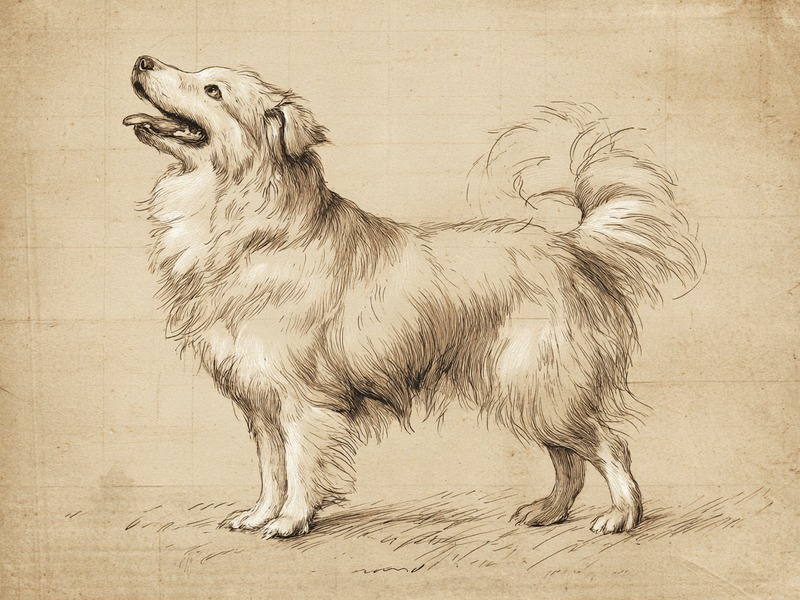

犬は好ましい相手には右寄り、警戒する相手には左寄りにしっぽを振るのだそうです。その差は、左右の脳の役割の違いを映しているといわれています。 Dogs wag their tails more to the right for someone they like and more to the left for something they are wary of, a difference thought to reflect how the two halves of the brain divide their work.
右は「うれしい」、左は「用心」
犬のしっぽの振り方を注意深く見ると、左右がきれいに対称ではないのだそうです。飼い主など好ましい相手を見たときは、犬を正面から見て右側寄りに、大きく振ります。反対に、見知らぬ攻撃的な犬のような警戒する相手を見たときは、左側寄りに振るのです。この左右の違いは、脳の働き方の差を映していると考えられています。私たちの脳は左右二つの半球に分かれていて、右脳は避けたり用心したりする気持ちに、左脳は近づきたい前向きな気持ちに、それぞれ深く関わっているとされます。しっぽの振れ方が右に寄るか左に寄るかで、そのとき犬の中でどちらの半球が強く働いているのかが、外から見えているというわけなのです。この仕組みを最初に明らかにしたのは、イタリアのトリエステ大学にあるVallortigara研究室で、2007年にCurrent Biologyという学術誌で発表されたそうです。
出典: Quaranta, A., Siniscalchi, M. & Vallortigara, G. "Asymmetric Tail-Wagging Responses by Dogs to Different Emotive Stimuli" Current Biology, 2007. および Ren, F. et al. iScience, 2022. pmc.ncbi.nlm.nih.gov
三日かけて右へ動く心
2022年には、中国科学院遺伝子発生生物学研究所のチームがこの研究を追いかけ、さらに一歩進めました。深層学習、つまり人工知能に動きを学ばせる技術を使ってしっぽの動きを細かく追跡したのだそうです。結果はiScienceという学術誌に発表されました。このとき調べられたのは、実験室で飼育されたビーグル犬10頭です。人との交流を三日間にわたって重ねていくと、しっぽの振り方が左寄りから右寄りへと段階的に移っていったのだそうです。はじめは用心ぎみだった心が、日を追うごとに前向きなものへ変わっていく様子が、しっぽの向きとして現れたのです。犬の気持ちは、しっぽの振れる方向という小さな手がかりから、案外はっきり読み取れるのかもしれません。
脳の左右差が行動に表れる現象は「機能的側性化」と呼ばれ、人間を含む多くの動物で報告されています。犬のしっぽも、その分かりやすい一例というわけです。